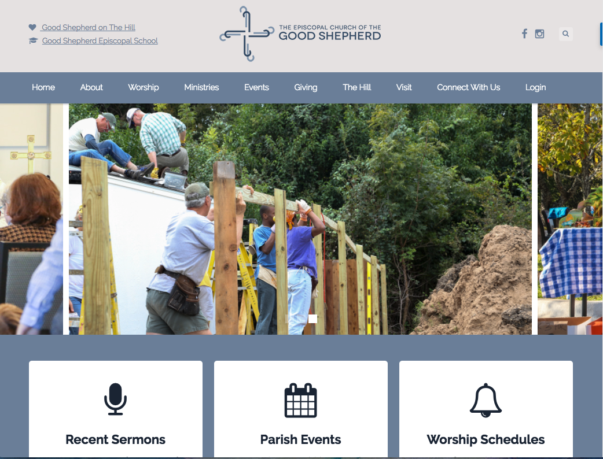

About Me

My motivation for becoming a developer stems from my experiences working with kids with disabilities. As a case manager for students with visual, cognitive, and physical impairments, I developed an interest in universal design and accessibility. I became fascinated with the way innovations in technology were able improve educational opportunities, medical treatment, and everyday quality of life for people with disabilities. As a full‐stack developer, my goal is to deliver products that offer elegant design and robust functionality, without compromising accessibility. I have a passion for front end work, including design and UX.
I love being a developer because there are always new things to learn! I am currently working on mastering React and experimenting with a couple of CSS frameworks.
I live in Austin with my dog and my cat. When I'm not writing code, I like taking photos, doing yoga, swimming, and traveling.
Download Resume
Recent Projects
Rainforest Partnership

Website for global non-profit committed to saving the rainforests
Working in Agile development environment to create new website using Wordpress Divi theme templates. Serving as liason between leadership, stakeholders, marketing, design, and content teams during planning
and implementation of site changes. Routinely analyze user feedback and implement changes to improve user experience. Added functional Paypal payment tool to enable users to make charitable donations.
Learn More About This Project
WeAreHear

Location-based music and memory sharing app
Created with Ruby, Rails, Postgres, HTML, CSS, Tachyons, Javascript, and JQuery;
Implemented Carrierwave gem, Cloudinary CDN, and Twilio API to enable users to send custom texts to friends
Recipe Box

App that allows users to share, search for, and rate favorite recipes
Created with Ruby, Rails, Postgres, HTML, CSS, Bootstrap, Javascript, and JQuery;
Utilized Devise gem for user authentication; created NavBar; created nested form to allow users to add new recipes with multiple ingredients
Good Shepherd Episcopal Church

Website for local church allowing them to view information about events, sermons, and worship schedules
Assisted lead UX designer by compiling data from user research, and produced a report on the findings to assist in website redesign